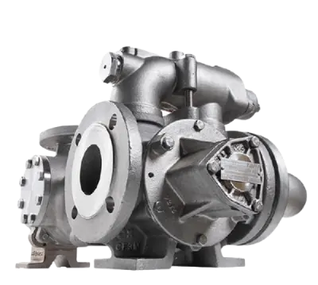

Официальный дистрибьютор насосного оборудования Mouvex на территории Украины
C марта 2020 наша компания ПРАЙТЕК имеет возможность предлагать своим клиентам оборудование производства французского завода MOUVEX. Данное предприятие было основано 1906 году и является частью корпорации PSG.
На сегодняшний день компания Mouvex — это мировой лидер по производству насосов и компрессоров для перекачивания различных жидкостей, и сухих сыпучих продуктов по всему миру.
Компания Mouvex® была основана инженером Андре Пети в 1906 году, после изучения проблем, с которыми сталкиваются пользователи шестеренных и роторных насосов при оптимизации своего процесса, в результате чего был изобретен эксцентриковый дисковый насос.
Все его преемники пошли по его стопам, включая его сына Альберта, который управлял компанией с 1938 года до тех пор, пока в 1998 году она не была поглощена Blackmer®.
Mouvex стала частью PSG® в 2008 году и в настоящее время работает на пяти континентах с глобальной сетью дистрибьюторов и производителей оригинального оборудования.
Шиберный ( пластинчатый) насос – разновидность объёмного насоса, основным органом которого является ротор с подвижными лопастями.
P series
Для продуктов с высокой вязкостью (производительность до 110 м3 /ч)
Пищевая промышленность: растительные масла, животные жиры, растительные жиры, патока, спирты
Энергетическая промышленность: различные виды топлива, бензин, дизель, легкое дистиллятное топливо, тяжёлое мазутное топливо, биодизель, биоэтанол, смазочные материалы, минеральные и синтетические масла
Химическая промышленность: краски, лаки, растворители, смолы, метанол, этанол, примеси, различные химические вещества
SLP series
Производительность до 25 м3 / ч
Идеально подходит для жидких или несмазывающих, вязких и агрессивных жидкостей, включая кислоты, щелочи, растворители и химические вещества.
•Отсутствие уплотнений, отсутствие утечек - отсутствие магнитов, механических уплотнений или набивки
•Вся конструкция из нержавеющей стали
•Сниженное потребление энергии
•Постоянная производительность с течением времени
•Отличные объемные характеристики
•Самовсасывающий
•Сухой ход
•Возможности удаления строк
•Простое и экономичное обслуживание
•Сертификат ATEX
CC8 series
Пропускная способность до 80 м3 / ч (8 бар)
Пластинчато-роторные насосы Mouvex® серии CC8 - это устанавливаемые на транспортные средства решения для погрузки и разгрузки нефтепродуктов для грузовиков и транспорта. Эти компактные насосы сертифицированы ATEX и оснащены встроенным байпасом, предназначенным для защиты от чрезмерного давления и перегрева.
Повышенная безопасность
•Совместим с дизельным топливом, мазутом, бензином, биодизельным парафином, керосином, мазутом и битумом.
•Двусторонний вал облегчает монтаж и адаптируется к направлению вращения
•Широкий диапазон расхода
•Тихая работа
•Постоянный расход с течением времени
•Возможности удаления строк
CC10 series
Производительность до 42 м3 / ч
Эти насосы обладают всеми теми же передовыми функциями и преимуществами, что и насосы серии Mouvex CC8, но при этом включают ряд новых усовершенствований, которые делают Встроенный байпас для предотвращения избыточного давления
•Неиспользуемый конец вала защищен кожухом
•Совместим с биотопливом, биодизелем, мазутом, дизельным топливом и керосином.
•Компактный размер подходит для небольших узких пространств
•Двусторонний вал облегчает монтаж и адаптируется к направлению вращения
•Тихая работа
•Постоянный расход с течением времени
•Возможности удаления строк
Ознакомтесь с информацией о правилах применения и технических особенностях продукции
Ознакомиться